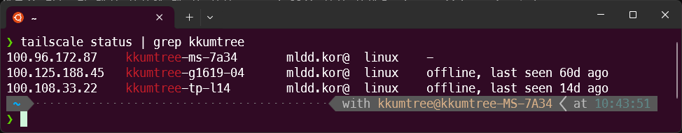
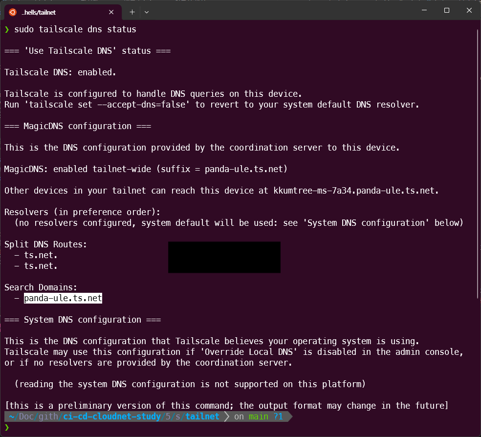
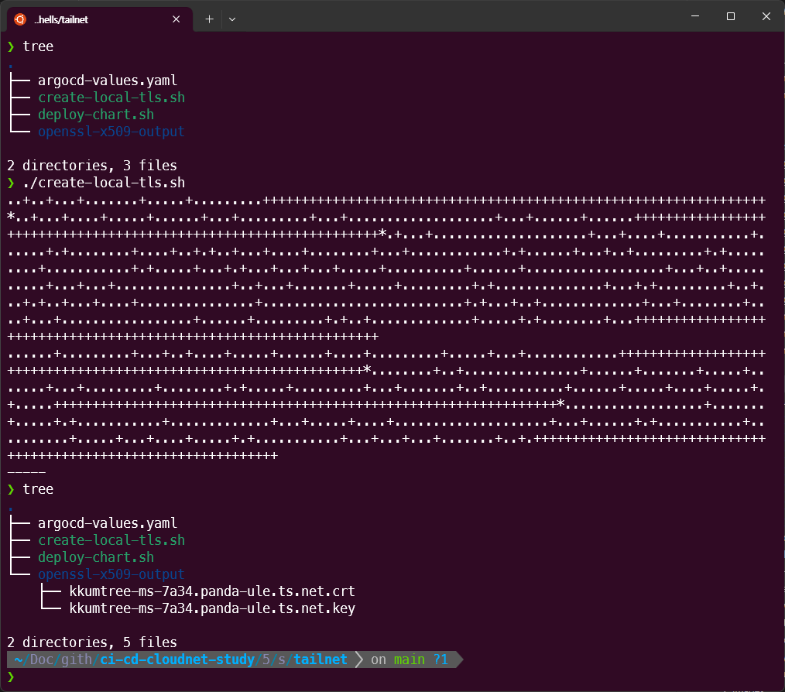

이전 게시물, ArgoCD with Ingress의 도메인 설정을 하다가 문득, Tailscale의 serve기능을 활용하여 Tailscale 내부 네트워크(이하, tailnet)에서만 접근 가능한 ArgoCD 서버를 구축하면 되지 않을까? 하여 구성해보았습니다.

kind를 운용 중인 Host와 접속할 Client들에 Tailscale 설치되어 있어야합니다.
1. Tailscale과 Serve
전통적인 중앙집중식(Hub-Spoke) VPN이 아래와 같다면,

Tailscale의 경우, Mesh 네트워크의 형태를 가지며 Wireguard를 활용합니다.

| 구분 | 전통적 중앙집중식 VPN | Tailscale (메쉬 VPN) |
|---|---|---|
| 네트워크 구조 | 중앙 서버를 통한 모든 트래픽 경유 | P2P 직접 연결, 분산형 메쉬 네트워크 |
| 데이터 경로 | 클라이언트 → VPN 서버 → 목적지 | 클라이언트 → 목적지 (직접 연결) |
| 프로토콜 | OpenVPN(TCP/UDP), IKEv2, L2TP | WireGuard(UDP 기반) |
| 성능 | 중앙 서버 병목 발생, 지연 증가 | 직접 연결로 지연 최소화, 빠른 속도 |
| 설정 복잡도 | 서버 구축, 포트 포워딩 필요 | 로그인만으로 즉시 사용 가능 |
| NAT 통과 | 수동 포트 포워딩 필요 | 자동 NAT Traversal 지원 |
| 확장성 | 서버 용량에 따라 제한 | 각 노드 독립적, 확장 용이 |
| 보안 | 중앙 서버가 모든 트래픽 확인 가능 | 종단 간 암호화, P2P 전송 |
Tailscale의 serve와 같은 경우는, ngrok의 기본 기능과 유사한 funnel과 달리
tailnet에 속한 기기만 접근이 가능합니다.
2. Tailscale의 상태확인
kind(Kubernetes)를 구동 중인, 데스크톱에서 상태를 확인합니다.
tailscale status
7A34로 끝나는 장비에서 kind를 구동 중이며 online/offline 대신 해당 장치에서 확인 중이기에,
-(하이픈)으로 표시됨을 알 수 있습니다.

또한, Tailscale에서 제공하는 DNS도 확인합니다.
sudo tailscale dns status

3. 인증서 재생성 및 ArgoCD 재배포
이전 게시물의 1. TLS 활성화 ArgoCD 배포 부분부터 해당 부분을 적용해보겠습니다.
해당 구성들은 아래 GitHub에 탑재되어 있습니다.
https://github.com/kkumtree/ci-cd-cloudnet-study 의5w/shells/tailnet폴더
(1) 인증서 생성
create-local-crt.sh에서 확인된 도메인으로 수정 후 실행하여,
로컬의 openssl-x509-output폴더에 인증서를 생성해두었습니다.
(keyout 및 out은 각 파일의 구분 용이를 위한 것이며, subj의 CN이 중요합니다.)
전체 DNS는 <Tailscale에서 식별된 Hostname>.<DNS주소>
# create-local-crt.sh
openssl req -x509 -nodes -days 365 -newkey rsa:2048 \
-keyout openssl-x509-output/kkumtree-ms-7a34.panda-ule.ts.net.key \
-out openssl-x509-output/kkumtree-ms-7a34.panda-ule.ts.net.crt \
-subj "/CN=kkumtree-ms-7a34.panda-ule.ts.net/O=kkumtree"

(2) ArgoCD 재배포
기존에 ArgoCD가 배포되어있기에 네임스페이스 째로 삭제를 먼저 진행했습니다.
kubectl delete ns argocd

deploy-chart.sh 파일에서 해당되는 도메인과 생성된 키로 값을 변경한 뒤, 배포하였습니다.
#!/bin/bash
kubectl create ns argocd
# confirm cert and key is available in the path
kubectl -n argocd create secret tls argocd-server-tls \
--cert=openssl-x509-output/kkumtree-ms-7a34.panda-ule.ts.net.crt \
--key=openssl-x509-output/kkumtree-ms-7a34.panda-ule.ts.net.key
# https://github.com/argoproj/argo-helm/blob/main/charts/argo-cd/values.yaml
cat <<EOF > argocd-values-tailnet.yaml
global:
domain: kkumtree-ms-7a34.panda-ule.ts.net
# # TLS certificate configuration via cert-manager
# # cert-manager가 있을 때, 활용.
# certificate:
# enabled: true
server:
ingress:
enabled: true
ingressClassName: nginx
annotations:
nginx.ingress.kubernetes.io/force-ssl-redirect: "true"
nginx.ingress.kubernetes.io/ssl-passthrough: "true"
nginx.ingress.kubernetes.io/backend-protocol: "HTTPS"
tls: true
EOF
# https://github.com/argoproj/argo-helm/tree/main/charts/argo-cd#installing-the-chart
helm repo add argo https://argoproj.github.io/argo-helm
# https://github.com/argoproj/argo-helm/releases
helm install argocd argo/argo-cd --version 9.0.5 -f argocd-values-tailnet.yaml --namespace argocd

다만, 차트 배포 시 ArgoCD 서버는 자체 TLS인증서를 쓰기로 설정되었기 때문에 위의 코드처럼, Tailscale을 위한 추가 어노테이션 설정이 필요합니다.
server:
ingress:
annotations:
nginx.ingress.kubernetes.io/backend-protocol: "HTTPS"
그렇지 않으면 ingress 로그를 까봤을 때, 307 redirect 에러가 납니다.

4. Tailscale serve 실행
sudo tailscale serve --bg --tcp 443 tcp://localhost:443
sudo tailscale serve status

5. 접속 확인
이제 해당 네트워크에서 제대로 접속되는 것을 알 수 있습니다.

동일 Tailnet에 속한 휴대전화로 해당 도메인에 접근가능한 것을 확인할 수 있습니다.

(Mac/Linux)
Tailscale에 대한 DNS파일(/etc/resolv.conf)이 깨졌을 경우에는 재기동을 합니다.
sudo tailscale down
sudo tailscale up
9. Tailscale serve 종료
실습을 마쳤다면, 종료하여 해당 포트를 반납합니다.
sudo tailscale serve --tcp 443 off

Reference
- tailscale serve command
- Ingress Configuration - ArgoCD / kubernetes/ingress-nginx

kkumtree
Source code on GitHub
© 2024 kkumtree and contributors All rights reserved.
Licensed under
CC BY-NC-ND 4.0